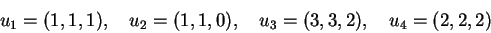
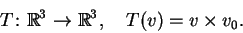

Next: About this document ...
P2 de Álgebra Linear I - 2001.1
Data: 16 de maio de 2001.
1)
Considere os vetores

e o subespaço vetorial V gerado por u1, u2, u3e u4.
- a)
Determine uma base
 de V.
de V.
- b)
Determine uma base ortogonal
 de V.
de V.
- c)
Determine uma base ortogonal
 de
de
 que contenha
.
que contenha
.
- d)
Veja se (2,2,4) pertence a V.
- e)
Escreva o vetor (5,5,3) como combinação linear dos vetores
da base .
2)
Considere as transformações lineares
Determine explicitamente as matrizes das transformações lineares
T, S,  e
e  .
.
3)
Considere a transformação linear
 definida como a projeção ortogonal na reta
definida como a projeção ortogonal na reta
 .
.
- a)
Determine a matriz de T.
- b)
Calcule T(1,3) e T(-3,1).
4)
Considere o vetor
 e defina a transformação linear
e defina a transformação linear

- a)
Determine o conjunto dos vetores
v tais que T(v)=0.
- b)
Estude se existe algum vetor v tal que T(v)=v0.
- c)
Estude se existe algum vetor v tal que T(v)=v.
- d)
Determine a forma geral de T e sua matriz [T].
- e)
É T inversível?
Next: About this document ...
Lorenzo J. Diaz
2001-05-21